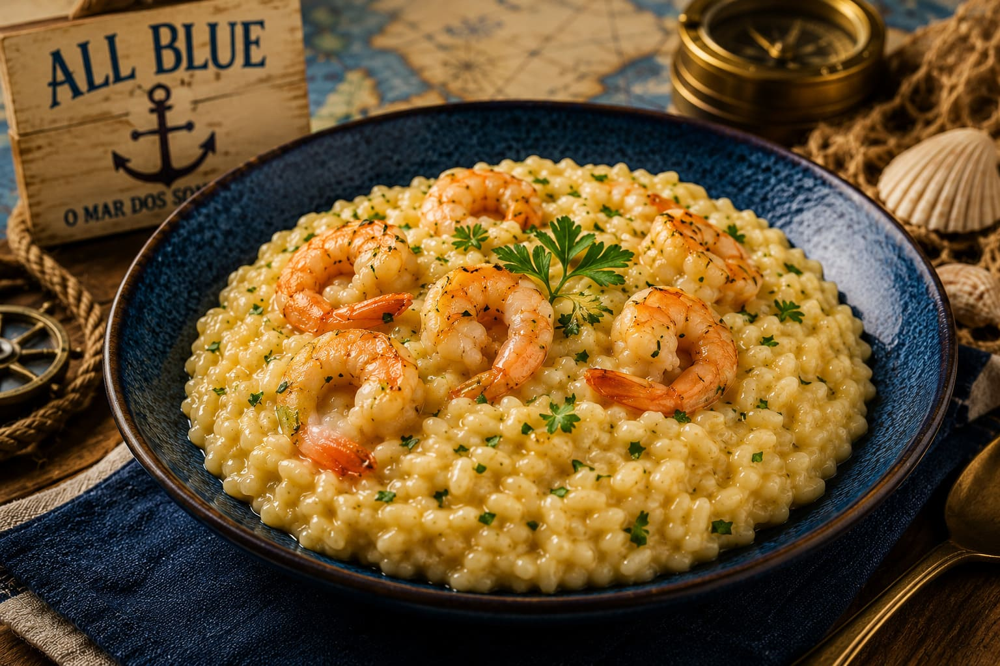

Risoto do All Blue

Um prato cremoso inspirado no sonho de Sanji: encontrar o lendário All Blue, o mar onde todos os sabores se encontram.
Tempo: 45 minutos
Rendimento: 4 porções
Dificuldade: Média
Ingredientes
- 2 xícaras de arroz arbóreo
- 300g de camarão limpo
- 1 cebola pequena picada
- 2 dentes de alho picados
- 1 litro de caldo de legumes quente
- 2 colheres de sopa de manteiga
- 100g de queijo parmesão ralado
- Sal e pimenta-do-reino a gosto
- Cheiro-verde para finalizar
Modo de Preparo
- Aqueça uma panela média e derreta uma colher de manteiga.
- Adicione a cebola e refogue até ficar transparente.
- Acrescente o alho e mexa rapidamente para não queimar.
- Coloque o arroz arbóreo e misture por dois minutos.
- Adicione uma concha de caldo quente e mexa até quase secar.
- Continue adicionando o caldo aos poucos, sempre mexendo.
- Quando o arroz estiver quase macio, coloque os camarões.
- Cozinhe até os camarões ficarem rosados.
- Desligue o fogo, adicione o parmesão e a outra colher de manteiga.
- Misture bem, ajuste o sal e finalize com cheiro-verde.
Dica do Chef
Adicione o caldo aos poucos e mexa sempre para deixar o risoto cremoso.